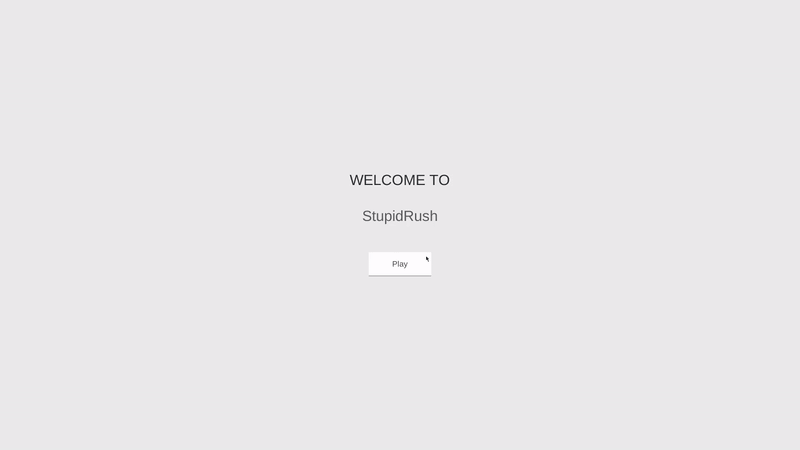

Project Timeline - Jan 2019 to Jan 2020
Roles - Game Designer
Tech Stacks - C#, Blender, Unity, Adobe Photoshop
Links - StubidRush
StubidRush should be easy-to-play, and free-to-play; it should feature very minimalistic user interfaces. The game should have zero learning cost and can be played without any tutorial and instructions. Design with very primary color scheme, easy machanics, and featuring infinite looped mmachanics. It should also be playable for an infinite amount of time. Allowing players to play while multitasking, and losing would not bring frustration.
The game is completely built by my own, and now the beta version can be played on web browser for PC. The project is finished as my first Unity project, and it is unlikely for further development. Click here and start playing!
Player use A and D on keyboard to control and dodge the obstacles. The scoreboard records the maximum distance from the player to travel in one consecutive run. The platform is designed to be slippery to increase difficulty and add more styles to the game. The final version of the game has four different levels which demonstrate my learning process. First level has basic control and hit logic. The second level adds a speed up block with more objects interaction. The third level adds a invincible block which gives more optins in level design. In the last level, a block that triggers explosions is added to enhance the graphics complexity.

As a the first unity project of mine, it is very mimimal and short, however, I still learned a lot of different features of Unity platform and some C# basic. As a beginner of game design with Unity, I am really surprised that this will bring me so many challenges, and at the same time, I am also surprised that this will bring me so many surprises. Please take a look and try it out! Click --> here